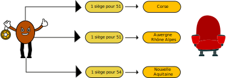
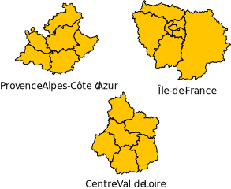
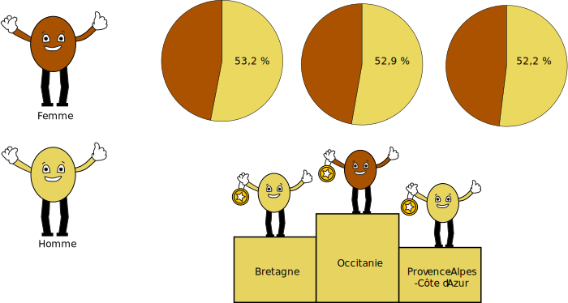
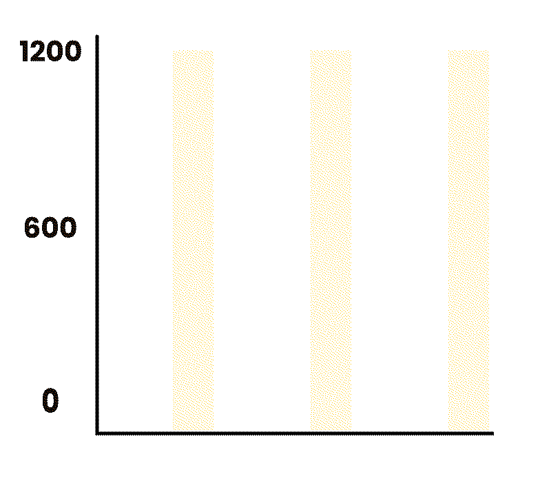

Des inégalités d'accès selon le lieu de résidence
Nombre d'établissements de cinéma
Le nombre d’établissement varie selon les régions, l’écart peut aller jusqu’a 300% dans certains territoires. On observe parmi les régions elles-mêmes des différences importantes entre les espaces ruraux et les espaces urbains. Ainsi, dans certains endroits, on doit faire plusieurs dizaines de kilomètres pour accèder à un cinéma.
La Corse malgrè sont très faible nombre de cinéma possède le meilleur ratio nombre de siège par habitant. Cela s’explique par sa faible population. Au contraire, de l’Île-de-France qui est le territoire le plus peuplé et pourtant dans les moins bons.
Nombre de siège par nombre d’habitants
Le tarif des billets les plus chères
Le tarif des billets est plus chère dans les zones urbaines, on observe des écarts jusqu’a 25% entre des régions. Cette différence de prix constitue une inégalité pour les plus précaires qui doivent faire des concessions.
Le profil types des spectateurs
Le plus d’hommes consommateur
Le plus de spectateurs entre 3 et 14 ans
La classe sociale des consommateurs

Les chiffres du cinéma par région
Le nombre d'entrées par an au cinéma
On remarque que les 3 régions possédant le plus d’établissements de cinéma sont logiquement celles qui font le plus d’entrées. On peut aussi noter que les régions du sud sont plus attractives que celles du nord.
Recettes en fonction des entrées
Les régions avec le plus d'écrans
Les habitudes de consommation
Les régions avec le plus de spectateurs assidus
Il y a trois types de spectateurs : les assidus qui viennent
toutes les semaines, les réguliers qui viennent tous les mois
et les occasionnels qui y vont quelques fois par